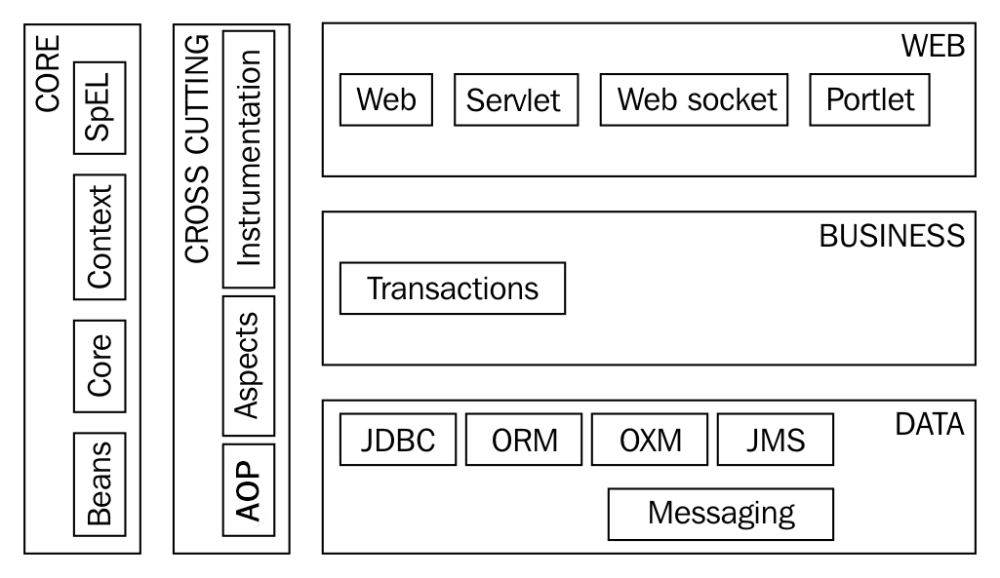

Introduction¶
Le Spring Framework est très largement utilisé dans la communauté Java pour le développement d’application pour les entreprises (notamment le développement d’applications Web). Mais on trouve même des applications Java basées sur le Spring Framework… dans des photocopieurs.
Pour comprendre l’origine et l’apport du Spring Framework, il faut savoir que son principal auteur, Rod Johnson, ne voulait pas suivre la même direction que celle prise par la plate-forme J2EE au début des années 2000.
J2EE proposait un environnement de déploiement d’application basé sur des serveurs d’application hébergeant les composants fournis par les développeurs dans des conteneurs logiciels. Les composants à fournir (notamment pour les EJB 1.x) devaient suivre une spécification technique assez complexe et lourde à mettre en œuvre.
À l’opposé, le Spring Framework proposait de bâtir des applications avec beaucoup moins de contraintes techniques. Au lieu que l’architecture des applications s’adapte à l’environnement technique, c’est le Spring Framework qui s’intègre au sein des applications. C’est pour cette raison, que l’on qualifie parfois le Spring Framework de conteneur léger.
L’idée centrale du Spring Framework est de n’imposer aucune norme de développement ni aucune contrainte technique sur la façon dont les développeurs doivent coder leurs applications (pas d’héritage spécifique ou d’interface à implémenter obligatoirement). Le Spring Framework se veut non intrusif et basé sur le principe de l’inversion de contrôle (ou Inversion of Control IoC) et la programmation orientée Aspect (Aspect Oriented Programming AOP). Il met en œuvre des modèles de conception (Design Patterns) tels que les factories pour fournir un environnement le plus souple possible.
Une des forces du Spring Framework est sa très grande modularité. En fonction des besoins techniques de son application, il est possible d’incorporer tel ou tel module du Spring Framework et de laisser de côté ceux qui ne sont pas nécessaires.
Les modules Spring¶
Le Spring Framework est découpé en modules pour faciliter son intégration dans les projets.
Parmi ces modules, il y a les modules fondamentaux qui font partie du noyau du Spring Framework (core) :
- Core
Les classes fondamentales utilisées par tous les autre modules
- Beans
Le module qui permet de manipuler les objets Java et de créer des beans
- Context
Ce module introduit la notion de contexte d’application et fournit plusieurs implementations de ces contextes. Avec ce module, il est possible de construire un conteneur léger IoC.
- SpEL
Ce module fournit un interpréteur pour le langage d’expression intégré au Spring Framework (Spring Expression Language ou SpEL).
Un autre ensemble de modules permettent d’intégrer la programmation orientée aspect (Aspect Oriented Programming ou AOP) dans une application. Le module Spring AOP est le module de base pour le support de l’AOP.
Les autres modules du Spring Framework permettent majoritairement d’intégrer dans une application des technologies tierces. Ainsi le Spring Framework agit comme une glu qui permet de construire des applications par adjonction de technologies. Par exemple, Spring Web est le module qui permet de créer des applications Web et de les déployer notamment dans un conteneur de Servlet Java EE, Spring Data permet de gérer les interactions avec des bases de données en utilisant diverses technologies : JDBC, JPA, Hibernate, MongoDB…
Note
Si vous gérez votre projet avec Maven, alors chaque module du Spring Framework est disponible sous la forme d’un artefact Maven.
Pour intégrer le noyau du Spring Framework, il suffit d’ajouter la dépendance avec Spring Core :
<dependency>
<groupId>org.springframework</groupId>
<artifactId>spring-core</artifactId>
<version>5.2.1.RELEASE</version>
</dependency>
Généralement, une application qui utilise le Spring Framework a au minimum besoin de Spring Context pour pouvoir créer une contexte d’application :
<dependency>
<groupId>org.springframework</groupId>
<artifactId>spring-context</artifactId>
<version>5.2.1.RELEASE</version>
</dependency>
Avec le mécanisme de dépendance transitive de Maven, la déclaration d’une dépendance
avec spring-context permet de récupérer les autres dépendances minimales
et suffit généralement pour commencer à implémenter une application basée sur
le Spring Framework.
Les projets Spring¶
En plus des modules, le Spring Framework s’est enrichi de projets bâtis sur le Spring Framework et qui apportent des fonctionnalités de haut niveau. Contrairement au Spring Framework, ces projets n’ont pas pour objectif d’être non intrusifs.
Parmi les projets Spring, on trouve :
Documentation¶
Un autre point fort du Spring Framework est la qualité de sa documentation. Attention cependant, l’environnement du Spring Framework est très vaste et donc il est très facile de se perdre dans la documentation.
Pour commencer, vous pouvez consulter la documentation sur Spring Core :
et plus généralement la documentation sur les principaux modules du Spring Framework :
https://docs.spring.io/spring-framework/docs/current/spring-framework-reference/index.html
Pour avoir une vision d’ensemble des projets qui existent dans l’éco-système Spring :
Enfin les guides fournissent des réponses pratiques et rapides sur certains points techniques :